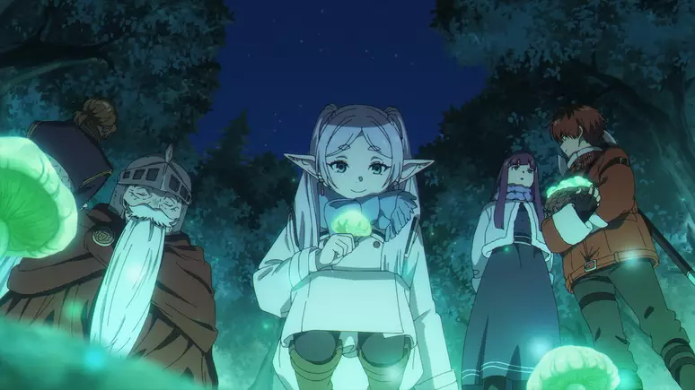

Após uma década de batalhas, o grupo de heróis formado por Himmel, Frieren, Heiter e Eisen derrota o Rei Demônio e traz paz ao mundo. Todos celebram. Mas Frieren, uma elfa maga que pode viver milhares de anos, logo se despede dos amigos. Para ela, dez anos foi pouco tempo. Ela parte, prometendo visitá-los de novo.
Cinquenta anos se passam num piscar de olhos para ela, mas quando reencontra os antigos companheiros, todos já estão velhos. Himmel, o herói, morre pouco tempo depois. No funeral, Frieren chora — não de dor imediata, mas de arrependimento. Ela percebe que nunca se esforçou para entender seus amigos, principalmente Himmel, que a admirava profundamente. Isso a marca. Pela primeira vez, Frieren sente o peso da passagem do tempo, não para si, mas para os outros.
Determinado a entender os sentimentos humanos, ela começa uma nova jornada. Heiter, antes de morrer, pede a Frieren que cuide de sua aprendiz, Fern, uma garota humana órfã, muito talentosa e madura para sua idade. As duas passam a viajar juntas.
Mais tarde, se unem ao grupo Stark, um jovem guerreiro tímido, mas poderoso, que foi treinado por Eisen. Com os três viajando juntos, o grupo revive partes da rota antiga, visita aldeias salvas no passado, encontra resquícios da batalha contra o Rei Demônio e encara novos perigos — demônios sobreviventes, exames de mago, templos antigos e questões emocionais não resolvidas.
A cada passo, Frieren relembra momentos com Himmel, Heiter e Eisen, e passa a entender o valor das memórias, das conexões humanas e da efemeridade do tempo. A história é suave, melancólica e ao mesmo tempo cheia de calor — um contraste entre a frieza da imortalidade e a intensidade da vida humana.
O objetivo final de Frieren é chegar ao extremo norte, onde está a “Terra além”, um local sagrado onde pode se comunicar com os mortos. Ela deseja encontrar Himmel novamente — não para se desculpar, mas para poder conhecê-lo, mesmo que tardiamente.